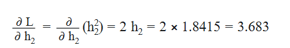
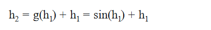
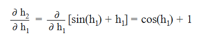
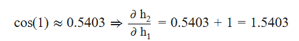
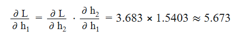
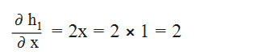
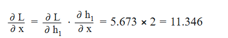

场景设定：一个极简的 2 层网络
我们定义一个超简单的神经网络，包含：
- 输入：$ x $
- 第一层：$ h_1 = f(x) = x^2 $
- 第二层（带残差）：$ h_2 = g(h_1) + h_1 $，其中 $ g(h_1) = \sin(h_1) $
- 损失函数：$ L = h_2^2 $
目标：计算 $ \frac{\partial L}{\partial x} $，即损失对输入的梯度。
前向传播（Forward Pass）
我们代入一个具体数值：设 $ x = 1 $
- $ h_1 = f(x) = x^2 = 1^2 = 1 $
- $ g(h_1) = \sin(h_1) = \sin(1) \approx 0.8415 $
- $ h_2 = g(h_1) + h_1 = 0.8415 + 1 = 1.8415 $
- $ L = h_2^2 = (1.8415)^2 \approx 3.391 $
反向传播（Backward Pass）
我们要计算 $ \frac{\partial L}{\partial x} $，使用链式法则。
第一步：从 $ L $ 回传到 $ h_2 $

这是损失对 $ h_2 $ 的梯度，它是已知的，因为 $ L $ 直接依赖 $ h_2 $。
第二步：从 $ h_2 $ 回传到 $ h_1 $

关键来了！$ h_2 $ 依赖于 $ h_1 $，但依赖方式是：所以：

代入 $ h_1 = 1 $：

根据链式法则：

第三步：从 $ h_1 $ 回传到 $ x $
$ h_1 = x^2 $，所以：

所以：

对比：如果没有残差连接
假设没有残差，即： 其他不变。
前向传播：
- $ h_1 = 1 $
- $ h_2 = \sin(1) \approx 0.8415 $
- $ L = (0.8415)^2 \approx 0.708 $
反向传播：
- $ \frac{\partial L}{\partial h_2} = 2 h_2 = 1.683 $
- $ \frac{\partial h_2}{\partial h_1} = \cos(h_1) = \cos(1) \approx 0.5403 $
- $ \frac{\partial L}{\partial h_1} = 1.683 \times 0.5403 \approx 0.909 $
- $ \frac{\partial L}{\partial x} = 0.909 \times 2 = 1.818 $
对比结果
| 情况 | $ \frac{\partial L}{\partial h_2} $ | $ \frac{\partial h_2}{\partial h_1} $ | $ \frac{\partial L}{\partial h_1} $ | $ \frac{\partial L}{\partial x} $ |
|---|---|---|---|---|
| 有残差 | 3.683 | 1.5403 | 5.673 | 11.346 |
| 无残差 | 1.683 | 0.5403 | 0.909 | 1.818 |
🔍关键分析：残差连接如何“保”住梯度？
❓ 为什么对 $ L $ 关于 $ h_1 $ 求导？不是对 $ x $ 吗？
✅ 是的，最终目标是 $ \frac{\partial L}{\partial x} $，但：
- 神经网络是函数的复合，不能直接对 $ x $ 求导
- 必须通过链式法则，一层层往回传
- $ h_1 $ 是中间变量，是 $ x $ 的函数，也是 $ h_2 $ 的输入
- 所以必须先算 $ \frac{\partial L}{\partial h_1} $，再算 $ \frac{\partial L}{\partial x} $
📌 反向传播的本质就是：从输出一路求导回输入
❓ $ \frac{\partial L}{\partial h_2} $ 是多少？我们不知道啊！
✅ 我们“知道”！ 因为 $ L $ 是 $ h_2 $ 的显式函数！在这个例子中 $ L = h_2^2 $，所以 $ \frac{\partial L}{\partial h_2} = 2 h_2 $在实际神经网络中：
- $ L $ 通常是交叉熵或 MSE
- $ h_2 $ 是模型输出
- 所以 $ \frac{\partial L}{\partial h_2} $ 是损失函数对输出的梯度，是已知的（比如 softmax + cross-entropy 的梯度是 $ \hat{y} - y $）
📌 所以：$ \frac{\partial L}{\partial h_2} $ 是反向传播的“起点”，它是已知的！
✅ 残差连接的真正作用
看这个关键项：
- 即使 $ g’(h_1) = 0 $（比如 $ g $ 是 sigmoid 且饱和），导数仍是 $ 1 $
- 所以 $ \frac{\partial L}{\partial h_1} = \frac{\partial L}{\partial h_2} \cdot 1 $，梯度不会消失
- 相当于：有一条“恒等通路”把梯度原封不动地传回去
📌 这就是“梯度至少有一条稳定通路”的数学本质。
✅ 总结：残差连接的梯度机制
| 概念 | 说明 |
|---|---|
| 链式法则 | 反向传播的基础：$ \frac{\partial L}{\partial x} = \frac{\partial L}{\partial h_2} \cdot \frac{\partial h_2}{\partial h_1} \cdot \frac{\partial h_1}{\partial x} $ |
| $ \frac{\partial L}{\partial h_2} $ | 是已知的！由损失函数决定，是反向传播的起点 |
| $ \frac{\partial h_2}{\partial h_1} $ | 残差连接让它变成 $ g’(h_1) + 1 $，至少为 1 |
| 为什么对 $ h_1 $ 求导 | 因为它是中间变量，必须通过它才能传回 $ x $ |
| 残差的作用 | 提供一条梯度为 1 的“高速公路”，防止梯度消失 |
🎯 最终答案
残差连接通过在梯度路径中引入恒等映射 $ + h_1 $，使得 $ \frac{\partial h_2}{\partial h_1} $ 至少为 1，从而确保即使非线性变换 $ g $ 的梯度很小，总梯度也不会消失。
这就是深层网络能稳定训练的关键。

...
...
This is copyright.